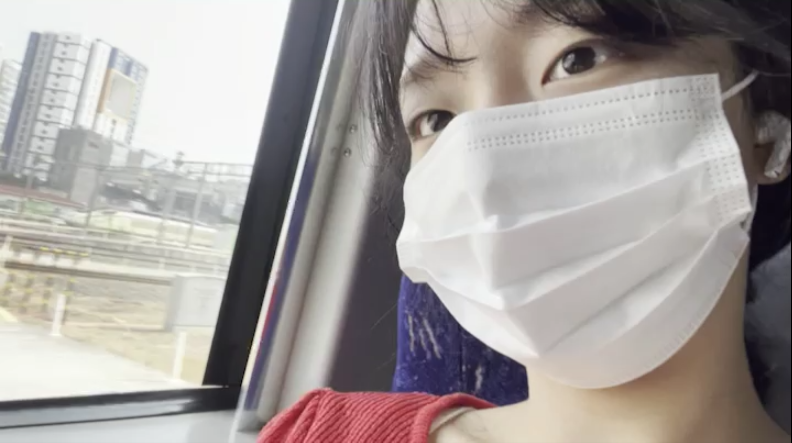
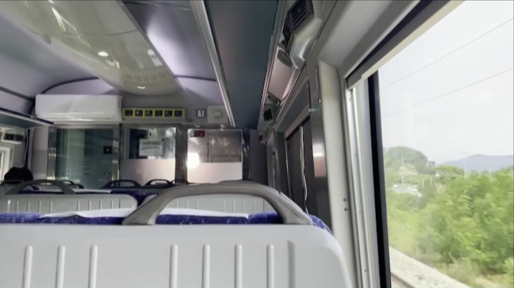

-

알랄랄라 뿡뿡뿡 올롤롤로 뿡뿡뿡 빵구쟁이 쭈여니의 여행이야기#1 | 사랑스러운 쭈여닝 | 경북대 글로벌소프트웨어학과 21학번 강주연 | 경북대 최고 미인 최고 귀요미 쭈여닝 | 애교쟁이 이쁨쟁이 욕구쟁이 심술쟁이 애기쟁이 찡찡이
쭈쭈여닝
82K views
-
알랄랄라 뿡뿡뿡 올롤롤로 뿡뿡뿡 빵구쟁이 쭈여니의 여행이야기#2 | 사랑스러운 쭈여닝 | 경북대 글로벌소프트웨어학과 21학번 강주연 | 경북대 최고 미인 최고 귀요미 쭈여닝 | 애교쟁이 이쁨쟁이 욕구쟁이 심술쟁이 애기쟁이 찡찡이
쭈쭈여닝
92K views
-

알랄랄라 뿡뿡뿡 올롤롤로 뿡뿡뿡 빵구쟁이 쭈여니의 여행이야기#3 | 사랑스러운 쭈여닝 | 경북대 글로벌소프트웨어학과 21학번 강주연 | 경북대 최고 미인 최고 귀요미 쭈여닝 | 애교쟁이 이쁨쟁이 욕구쟁이 심술쟁이 애기쟁이 찡찡이
쭈쭈여닝
142K views